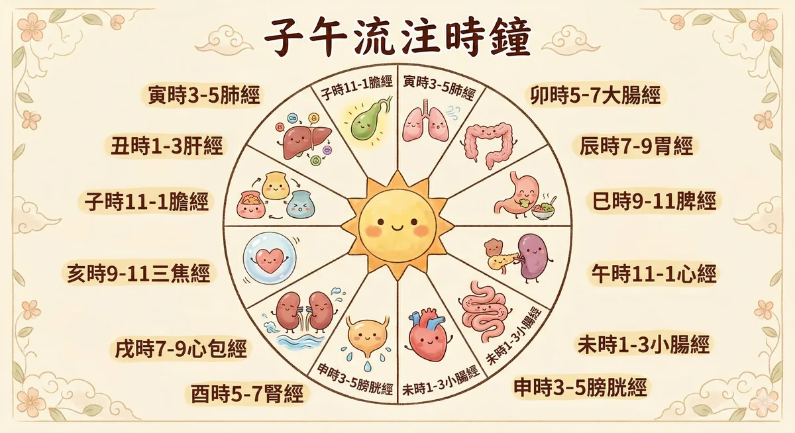
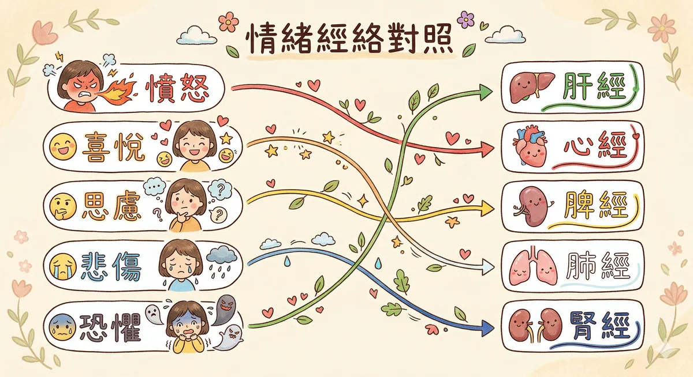

經絡 經絡 是中醫理論裡分佈全身的 14 條能量通道與 361 個穴位節點，負責運行氣血、連結臟腑、反映身心狀態的訊號系統。
馥靈之鑰把經絡當作身體的高速公路 — 不是玄學，是你身體一直在使用的實體地圖。2017 諾貝爾生理醫學獎晝夜節律研究為「子午流注」提供了現代生物學基礎。
本页导览
什麼是经络
子午流注 — 身体的时刻表
十四经络个论
经络 × 情绪 × 精油 三角对照
日常觉察练习
半夜醒来的时间在跟你说话
办公室经络急救 3 穴
什麼是经络（简单版）
先别急著想像什麼「看不见的能量线」。換个方式想：你的身体里有一套通讯系统，比 Wi-Fi 还老，比电话线还可靠。它从头顶到脚底、从胸腔到指尖，佈了 14 条主干道，串起 361 个节点。中医管這套系统叫「经络」，管那些节点叫「穴位」。
你大概有过這种经验：右肩痠了一整天，结果傍晚开始偏头痛。或者连续失眠幾晚，皮膚就开始冒痘。這不是巧合。膀胱经从头顶一路走到小指，肺经管呼吸也管皮膚。一条路堵了，它負責的区域全部会收到通知。
科学怎麼看经络？
世界卫生组织（WHO）在 1991 年统一制订了 361 个穴位的标准定位，2006 年出版西太平洋版穴位国际命名标准，2014 年再次修订。這代表经络不只是古人的想像，全球医学界花了幾十年去量化、定位、反覆验证這些节点。
现代研究提出幾个解释。一个是「筋膜连续体假说」：全身的筋膜像一件连身衣，经络走的路线，剛好跟筋膜的张力传导路线高度重叠。另一个是生物电特性，穴位区域的皮膚电阻比周围低，电流传导率更高，等于身体在這些点上多装了「天线」。
參考：Langevin HM, Yandow JA (2002). Relationship of acupuncture points and meridians to connective tissue planes. The Anatomical Record , 269(6), 257-265. / Ahn AC et al. (2008). Electrical properties of acupuncture points and meridians. Bioelectromagnetics , 29(4), 245-256.
你不需要「相信」经络。你只需要注意：下次肩膀痠的时候，去按一下手上的合谷穴，痠的那一側会不会松一点。身体会自己告訴你答案。
子午流注 — 你的身体有自己的时刻表

2017 年諾贝爾生理医学奖頒给了三位美国科学家，他們发现了控制晝夜节律的分子机制，原来我們体内真的有一套「生理时钟基因」在跑。中医两千年前就观察到类似的现象，只是用了不同的语言：子午流注。
概念很简单。一天 24 小时分成 12 个时辰，每个时辰有一条经络特别活躍，像是轮到它「值班」。這不是什麼神祕力量，就是身体的维修排程表。凌晨三点肺经值班，所以气喘的人那个时间最容易发作。早上七到九点胃经当班，所以那段时间吃早餐消化最好。
如果你每天固定在某个时间不舒服，凌晨三点醒来、下午三点特别累、晚上九点开始焦躁，先看看那个时段是哪条经络在值班。這不是鬼，是你的身体在跟你报告今天的状况。
时辰
时间
经络
脏腑
身体在做什麼
建议
精油
寅时
03-05
肺经
肺
深层排毒、分配第一口气到全身
醒了就做幾个深呼吸，不要滑手机
尤加利、薄荷
卯时
05-07
大腸经
大腸
排便黄金时段，清除昨天的废物
起床喝一杯温水，别急著出门
檸檬、薑
辰时
07-09
胃经
胃
消化吸收最强的时段
认真吃早餐，吃饱吃好
甜橙、薄荷
巳时
09-11
脾经
脾
运化水谷、思考力最集中
处理最重要的事，脑袋最清楚
檸檬香茅
午时
11-13
心经
心
阳气最旺，心脏供血最旺盛
午休 15 分钟就好，不要超过半小时
熏衣草、依兰
未时
13-15
小腸经
小腸
分清浊，把营养和废物分开
不适合吃大餐，轻食就好
佛手柑
申时
15-17
膀胱经
膀胱
代谢排毒、排出多余水分
多喝水，让身体好好排
杜松、丝柏
酉时
17-19
腎经
腎
储存精气、补充生命力
放慢节奏，不要再拼命了
雪松、檀香
戌时
19-21
心包经
心包
保护心脏、情绪安頓
陪家人、散步、做让心情好的事
玫瑰、天竺葵
亥时
21-23
三焦经
三焦
免疫修复、全身系统重新校准
准备睡觉，远离藍光
熏衣草、乳香
子时
23-01
膽经
膽
膽汁分泌、决断力重置
必须睡著，不然隔天猶豫不决
洋甘菊
丑时
01-03
肝经
肝
藏血解毒、情绪净化
熟睡中，精油白天用就好
薄荷、迷迭香（白天用）
參考：Hall JC et al. (2017). 諾贝爾生理医学奖：晝夜节律的分子机制。/ 《黄帝内经．灵樞．营卫生会篇》子午流注原文。/ Smolensky MH, Peppas NA (2007). Chronobiology, drug delivery, and chronotherapeutics. Advanced Drug Delivery Reviews , 59(9-10), 828-851.
你半夜醒来的时间在跟你说话
有没有过那种经验？明明很累，却在某个固定时间突然醒来，看一眼手机，凌晨两点十五分。隔天又是，再隔天还是。你开始怀疑是不是房间有什麼问题，或者最近压力太大。
子午流注的邏輯其实很简单：你在哪个时段醒来，就去看那个时段对应的经络。不是说经络「叫醒」你，而是那条经络对应的脏腑功能正在高峰运作，如果有状况，身体会用最直接的方式通知你，把你叫醒。
01:00 - 03:00
肝经时段 — 你在压抑什麼？
凌晨一到三点是肝经当值。肝在中医里主「疏泄」，白话说就是让情绪和气血流动顺暢。如果你固定在這个时段醒来，先问自己两个问题：
最近有没有在压抑什麼情绪？憤怒、委屈、不甘心，明明很在意却假装不在意的那种。肝最怕的就是「悶住」。
最近有没有喝太多酒？肝脏在這个时段进行解毒工作，酒精代谢的負担会直接把你叫醒。
試試看：睡前把那件一直想说但没说出口的事写在纸上。不用给任何人看，写完就好。肝需要的是「流动」，文字也是一种出口。
03:00 - 05:00
肺经时段 — 你在悲伤什麼？
凌晨三到五点是肺经当值。肺在中医里对应的情绪是「悲」和「忧」。如果你总在這个时段醒来，而且醒来的时候会莫名想哭或者觉得胸口悶悶的：
留意呼吸道的状况。过敏、鼻塞、气喘在這个时段容易发作，因为肺经正在高峰。
问问自己最近有没有在为什麼事情难过。不一定是大事，有时候只是某个人的一句话，或者一个让你失望的结果。那份悲伤可能白天被你推开了，但凌晨三点它回来找你。
試試看：醒来的时候不要马上拿手机。做三次深呼吸，吸到最饱，吐到最乾净。让肺做它該做的事，把旧的排出去，把新的吸进来。
05:00 - 07:00
大腸经时段 — 這是正常的
清晨五到七点是大腸经当值。如果你在這个时段醒来，恭喜，你的身体节奏是正常的。這本来就是排毒和排泄的最佳时段，古人管這个叫「卯时」，很多人会自然在這个时段有便意。
醒来去上厕所就对了，不要硬撑著继续睡。大腸经在工作，顺著它来。
喝一杯温水，帮助腸道蠕动。不需要是蜂蜜水或檸檬水，就是普通温水。
如果你在這个时段醒来却没有便意，而且長期便秘，那可能要回头看看饮食和水分摄取。大腸经说：我准备好了，但你得给我东西排。
如果固定在同一个时间醒来超过两周，去看医生。经络是身体的參考座标，不是诊断工具。半夜醒来可能是睡眠呼吸中止症、胃食道逆流、焦虑症或其他需要专业处理的状况。身体在说话，你該做的是认真聽，然后交给能处理的人。
十四经络个论
点开每条经络，看它走哪里、管什麼、堵了会怎样、怎麼自己处理。
LU
手太阴肺经 Lung Meridian
悲伤
路线 从胸口（中府穴）出发，沿著手臂内側走到大拇指指尖（少商穴），共 11 穴。
管什麼 呼吸、皮膚、免疫第一道防线。情绪上对应悲伤和哀慟，長期压抑的悲伤会让呼吸变淺，皮膚变差。
关键穴位 中府（LU1，鎖骨下方，咳嗽胸悶按這里）、尺澤（LU5，手肘弯内側，清肺热）、列缺（LU7，手腕上方两指，头痛咳嗽的万用穴）、少商（LU11，大拇指指甲旁，急性咽喉痛放血穴）
堵了会怎样 反覆感冒、皮膚乾癢、凌晨 3-5 点咳醒、鼻塞、講话有气无力、莫名想哭
精油推薦 尤加利（暢通呼吸道）、乳香（深层呼吸，安撫悲伤）、茶树（提升免疫力）
自我照顾：早上起来做 5 次深長的腹式呼吸。吸的时候用鼻子，肚子脹起来；吐的时候用嘴巴，慢慢吐乾净。這不只是呼吸练习，是在帮肺经暖机。
LI
手阳明大腸经 Large Intestine Meridian
放下
路线 从食指指尖（商阳穴）沿手臂外側上行，经肩膀到鼻翼旁（迎香穴），共 20 穴。
管什麼 排泄、净化、代谢废物。情绪上对应「放不下」，有些东西早該排出去了，你偏偏抓著。
关键穴位 合谷（LI4，虎口处，止痛之王，头痛牙痛先按這里）、曲池（LI11，手肘弯外側，清热排毒）、迎香（LI20，鼻翼两旁，鼻塞就按它）
堵了会怎样 便秘或腹泻、皮膚粗糙暗沉、牙齦腫痛、肩膀前側僵硬、思绪混乱放不下旧事
精油推薦 檸檬（净化排毒，清新感让你想「清理」）、薄荷（促进腸蠕动）、甜橙（化解思绪糾结）
自我照顾：头痛的时候，用另一隻手的大拇指按住合谷穴（虎口肌肉最鼓的地方），按到有痠脹感，维持 1-2 分钟。痛的那一側特别有感。
ST
足阳明胃经 Stomach Meridian
焦虑
路线 从眼睛下方（承泣穴）开始，经脸頰、胸腹前側，一路下到第二脚趾（厲兌穴），共 45 穴。是十二经络中穴位最多的一条。
管什麼 消化吸收、接收营养（食物和想法都算）。情绪上对应焦虑和过度思虑，想太多的人胃都不好，不是巧合。
关键穴位 四白（ST2，眼眶下，眼疲劳黑眼圈）、天樞（ST25，肚臍旁两指，便秘腹泻双向调节）、足三里（ST36，膝盖下四指小腿外側，养生第一大穴，什麼都能调）
堵了会怎样 胃脹气、食慾异常（太好或太差）、脸色蜡黄、嘴角破、膝盖痛、想太多到消化不了
精油推薦 甜橙（温暖胃气，化解焦虑）、薄荷（消脹气）、薑（暖胃驱寒）
自我照顾：每天按足三里 2 分钟。位置在膝盖骨下方四根手指宽、小腿骨外側一指宽的地方。按到有痠脹感就对了。中医有句话：「常按足三里，胜吃老母鸡。」
SP
足太阴脾经 Spleen Meridian
担忧
路线 从大脚趾内側（隐白穴）沿腿内側上行，经腹部到胸脅（大包穴），共 21 穴。
管什麼 运化水谷（把食物变成身体能用的东西）、管理水分代谢、维持肌肉张力。情绪上对应担忧和缺乏安全感，反覆在脑中推演「万一怎麼办」就是脾经在喊。
关键穴位 三阴交（SP6，内踝上四指，婦科要穴，经痛先按這里，孕婦禁按）、血海（SP10，膝盖内側上方，补血活血）、太白（SP3，脚内側第一蹠骨后方，健脾祛湿）
堵了会怎样 容易水腫、四肢无力、吃饱就脹、月经量过多或过少、过度担心、反覆想同一件事
精油推薦 檸檬香茅（祛湿化痰）、甜茴香（暖脾助消化）、天竺葵（平衡荷爾蒙，安定情绪）
自我照顾：少吃生冷食物和甜食。脾最怕湿和冷，冰饮料是它的天敵。经痛的时候按三阴交（内踝往上四指宽），左右各按 2 分钟，比吃止痛药还快。
HT
手少阴心经 Heart Meridian
喜悅
路线 从腋下（极泉穴）沿手臂内側走到小指指尖（少冲穴），共 9 穴。穴位最少但地位最高。
管什麼 主血脈和神志。用白话说就是：心脏跳动和你有没有办法好好思考、好好睡觉，都归它管。情绪上对应喜悅，但过度興奋或过度空洞都是心经在抗议。
关键穴位 极泉（HT1，腋下顶端，心悸胸悶）、神门（HT7，手腕内側橫纹尺側端，失眠焦虑第一穴）、少冲（HT9，小指指甲旁，急救穴）
堵了会怎样 失眠多夢、心悸胸悶、舌尖红、口腔潰瘍、焦虑不安、与人疏离感觉不到快乐
精油推薦 熏衣草（安神助眠，公认最安全的精油之一）、依兰（降心率，打开心轮的代表油）、玫瑰（高频精油，温暖心脏）
自我照顾：睡前按神门穴 1-2 分钟。位置在手腕内側橫纹上，小指那一側的凹陷处。一边按一边做腹式呼吸，身体会自动切換到休息模式。
SI
手太阳小腸经 Small Intestine Meridian
辨识
路线 从小指外側（少澤穴）沿手臂外側上行，经肩胛、颈部到耳前（聽宮穴），共 19 穴。
管什麼 分清浊，把食物里有用的留下、没用的送走。延伸到心理层面，就是判断力：這件事該接还是該放？這个人該信还是該防？
关键穴位 后谿（SI3，握拳小指側橫纹端，落枕的救星）、肩貞（SI9，肩关节后方，肩周炎）、聽宮（SI19，耳屏前方，耳鸣耳聾）
堵了会怎样 消化不良、肩颈僵硬（尤其后側）、耳鸣、顳顎关节痛、判断力下降、容易被带著走
精油推薦 佛手柑（清理思绪的第一名）、快乐鼠尾草（帮助辨识内在真实感受）
自我照顾：落枕的时候握拳，在小指側找到那条橫纹的尽头（后谿穴），用另一手按压，同时慢慢轉动脖子。很多人按完就能轉了。
BL
足太阳膀胱经 Bladder Meridian
恐惧
路线 从眼头（睛明穴）上行过头顶，沿后脑、脊椎两側一路到小脚趾（至阴穴），共 67 穴。是全身最長、穴位最多的经络。
管什麼 排毒代谢水液、防禦外邪。背部的膀胱经上有所有脏腑的「背俞穴」，等于一条经络装了全身脏腑的遙控器。情绪上对应恐惧和不安全感。
关键穴位 睛明（BL1，眼头凹陷，眼疲劳先按這里）、委中（BL40，膝盖后方正中间，腰背痛要穴「腰背委中求」）、崑崙（BL60，外踝后方，头痛腰痛）、至阴（BL67，小脚趾指甲旁，胎位不正艾灸穴）
堵了会怎样 腰背僵硬疼痛、频尿、后头痛、眼睛疲劳乾澀、莫名恐惧不安、容易被嚇到
精油推薦 杜松（排水排毒的代表油）、丝柏（收斂、稳定）、雪松（紮根、安定感）
自我照顾：每天花 3 分钟用网球靠墙滾背。站著背靠墙，把网球放在脊椎旁边（膀胱经的位置），上下滾动。全身脏腑的反射区都在這里，滾完会觉得整个人松了一圈。
KI
足少阴腎经 Kidney Meridian
恐惧/意志
路线 从脚底（湧泉穴）沿腿内側上行，经腹部到鎖骨下（俞府穴），共 27 穴。
管什麼 先天之本、生命力的总倉庫。管生長发育、生殖、骨骼、脑髓、聽力。情绪上对应恐惧和意志力，腎气足的人沉稳有底气，腎气虚的人容易慌、容易怕。
关键穴位 湧泉（KI1，脚底前三分之一凹陷处，接地第一穴，失眠急救、降虚火）、太谿（KI3，内踝后方跟腱前凹陷，补腎大穴）、照海（KI6，内踝下方，咽喉乾痛、失眠）
堵了会怎样 腰膝痠软、畏寒怕冷、夜频尿、耳鸣聽力下降、头发早白脫落、慢性疲劳、缺乏动力、骨质流失
精油推薦 雪松（温暖沉稳的木质香，安定感）、檀香（深沉紮根，冥想用油）、薑（温腎散寒）
自我照顾：睡前用温热水泡脚 15 分钟，水位盖过内踝。泡完按湧泉穴（脚底前凹陷处）各 50 下。腎经从脚底开始走，暖了脚就暖了腎。
PC
手厥阴心包经 Pericardium Meridian
敞开/压抑
路线 从胸中（天池穴）沿手臂内側正中走到中指指尖（中冲穴），共 9 穴。
管什麼 心脏的保鑣，替心脏挡掉外来的冲击。情绪上对应你愿不愿意打开心门，被伤过的人心包经特别紧，胸口悶悶的，像有东西压著。
关键穴位 曲澤（PC3，肘弯内側正中，心痛胸悶）、内关（PC6，手腕内側上方三指，晕车嘔吐失眠焦虑的万用穴）、劳宮（PC8，握拳中指尖触碰处，提神醒脑、安定心神）
堵了会怎样 胸悶心悸、手心发热或冰涼、情绪压抑不敢表达、人多的地方就不自在、晚上 7-9 点特别烦躁
精油推薦 玫瑰（打开心门的第一名）、橙花（深层安撫创伤）、佛手柑（轻柔地解开防備）
自我照顾：搭车会晕、焦虑的时候，按内关穴（手腕内側橫纹上方三指宽的正中间）。很多孕婦用止吐手环，压的就是這个点。
TE
手少阳三焦经 Triple Energizer Meridian
协调
路线 从无名指指尖（关冲穴）沿手臂外側上行，经肩膀、耳后到眉尾（丝竹空穴），共 23 穴。
管什麼 全身的水液代谢和温度调节。三焦是中医独有的概念，可以想成身体的「中央空调 + 排水系统」。上焦管心肺（霧状分布），中焦管脾胃（泡泡般消化），下焦管腎膀胱（水溝般排出）。
关键穴位 外关（TE5，手腕背面上方三指，感冒头痛、偏头痛）、支溝（TE6，外关上方一指，便秘特效穴）、翳风（TE17，耳垂后方凹陷，面癱耳鸣牙痛）
堵了会怎样 忽冷忽热、水腫、耳鸣、偏头痛、免疫力下降、整个人不协调觉得「怪怪的」
精油推薦 天竺葵（平衡荷爾蒙和水分的高手）、葡萄柚（利水消腫）、丝柏（调节水液代谢）
自我照顾：便秘的时候按支溝穴（手腕背面上方四指宽，两骨之间），有些人按了三分钟就想跑厕所。三焦经 21-23 点值班，這个时间最好已经在准备睡觉了。
GB
足少阳膽经 Gallbladder Meridian
决断
路线 从眼外角（瞳子髎穴）绕耳后，沿身体側面（像裤子側边的车縫线）一路到第四脚趾（足竅阴穴），共 44 穴。
管什麼 膽汁分泌、决断力、勇气。中医说「膽主决断」，一个人有没有膽识，看的就是膽气足不足。膽和肝互为表里，肝经管生气，膽经管做决定。
关键穴位 风池（GB20，后头骨下方凹陷，头痛感冒失眠必按）、肩井（GB21，肩膀最高点正中，肩颈僵硬，孕婦禁按）、环跳（GB30，臀部外側，坐骨神经痛）、阳陵泉（GB34，膝盖外側下方腓骨头前下凹陷，筋的要穴）
堵了会怎样 偏头痛（太阳穴附近）、口苦、肋骨下方脹痛、大腿外側紧繃、优柔寡断、半夜 11-1 点醒来
精油推薦 薄荷（清利头目）、迷迭香（提振勇气和决断力）、洋甘菊（缓解膽经偏头痛）
自我照顾：偏头痛的时候用拇指按风池穴（后脑勺下方两条大筋外側凹陷处），力道往对側眼睛方向斜上推，按到痠脹感维持 1 分钟。很多人按完眼前会亮一下。
LR
足厥阴肝经 Liver Meridian
憤怒
路线 从大脚趾（大敦穴）沿腿内側上行，绕过生殖器到肝脏、再上到头顶（与督脈交会），共 14 穴。
管什麼 疏泄气机、藏血、管理情绪的流动。肝经是情绪的总调度，生气是肝气往上冲，抑鬱是肝气往下沉。女性月经、眼睛、指甲也归肝管。中医说「肝开竅于目」，用眼过度的人肝经一定累。
关键穴位 太冲（LR3，脚背第一二蹠骨之间凹陷，疏肝解鬱第一穴，被称为「消气穴」）、行间（LR2，大脚趾和二趾趾縫间，肝火旺）、期门（LR14，乳头下方两肋间，胸脅脹痛）
堵了会怎样 容易生气或悶悶的、眼睛乾澀红痛、凌晨 1-3 点醒来、月经不调经前暴躁、两側肋骨脹痛、指甲易裂
精油推薦 羅马洋甘菊（肝经怒气的最佳对手，温柔但有效）、佛手柑（疏肝理气的柑橘代表）、熏衣草（平衡过旺的肝火）
自我照顾：生气的时候按太冲穴（脚背大脚趾和二趾之间的骨縫往上推到凹陷处）。气到不行的人按這里会特别痠痛，按到不痛为止，气也就消了一半。太冲＋合谷一起按，叫做「四关穴」，是中医情绪急救的经典组合。
CV
任脈 Conception Vessel（奇经八脈）
滋养
路线 从会阴部沿身体前正中线上行，经肚臍、胸口到下巴（承浆穴），共 24 穴。
管什麼 「任」有「妊养」的意思，是阴经的总管。管所有阴经的气血，跟生殖、子宮、月经、孕育直接相关。任脈就像身体前面的一条中軸线，维持著「接收」和「滋养」的功能。
关键穴位 关元（CV4，肚臍下四指，暖宮补腎培元气）、气海（CV6，肚臍下两指，气虚乏力的充电站）、膻中（CV17，两乳头连线正中，胸悶气短情绪鬱结）
堵了会怎样 月经不调、白带异常、小腹冰涼、胸口憋悶、泌尿问题、觉得自己「不值得被滋养」
精油推薦 玫瑰草（温暖子宮、滋养阴性）、甜茴香（暖宮调经）、橙花（深层的自我接纳）
自我照顾：双手搓热后放在关元穴（肚臍下方四指宽）上，感受手掌的温度慢慢渗入。每天做 3 分钟，比喝薑茶还有效。经期前一周开始做，不适感会明显减轻。
GV
督脈 Governing Vessel（奇经八脈）
统领
路线 从尾骨（長强穴）沿脊椎正中线上行，过头顶到上唇内（齦交穴），共 28 穴。
管什麼 「督」有「统帥」的意思，是阳经的总管。管全身阳气的升发和运行。督脈就是身体后面的那条中軸线，决定你的「脊梁骨硬不硬」，生理上和心理上都是。
关键穴位 百会（GV20，头顶正中，提神醒脑、头痛头晕）、大椎（GV14，第七颈椎下，感冒发烧必灸穴）、命门（GV4，第二腰椎下，生命之门，补腎壮阳）
堵了会怎样 脊椎僵硬疼痛、畏寒怕风、精神不振、头晕头重、记忆力下降、缺乏主见和领导力
精油推薦 迷迭香（提振阳气和精神力的代表油）、尤加利（暢通督脈，清醒头脑）、乳香（稳定而深沉的力量感）
自我照顾：感觉精神不好、畏寒的时候，用吹风机的热风（注意距离别烫到）吹大椎穴（低头时脖子后面最突出的骨头下方）。吹到皮膚微微发红就好。這是民间版的「灸大椎」，简单但有效。
经络 × 情绪 × 精油 三角对照

身体不舒服的时候先问自己：最近有什麼情绪卡住了？然后对照下面的表，找到对应的经络和精油。
憤怒、烦躁、压抑
经络：肝经 （LR）佛手柑、羅马洋甘菊、熏衣草
悲伤、哀慟、失落
经络：肺经 （LU）尤加利、乳香、茶树
恐惧、不安、缺乏动力
经络：腎经 （KI）雪松、岩兰草、檀香
担忧、过度思虑、不安全感
经络：脾经 （SP）檸檬香茅、甜橙、天竺葵
过度興奋 或 空虚疏离
经络：心经 （HT）依兰、熏衣草、玫瑰
不敢敞开、情绪压抑
经络：心包经 （PC）玫瑰、橙花、佛手柑
猶豫不决、缺乏勇气
经络：膽经 （GB）迷迭香、薄荷、檸檬
放不下、执著、混乱
经络：大腸经 （LI）檸檬、薄荷、甜橙
情绪和经络之间的对应不是一对一的。一个人同时有憤怒和恐惧，那就同时处理肝经和腎经。身体比你想得聰明，它会告訴你哪里先。哪里最痠、最不舒服，就是优先顺序。
日常觉察练习
不需要背穴位图，不需要买铜人，三个动作就能开始跟身体对话。
Morning
早晨：顺著肺经呼吸
起床后坐在床边，双脚平放地上。
右手掌放在左胸鎖骨下方（中府穴的位置）。
用鼻子慢慢吸气，感受胸口微微撑开。手掌顺著手臂内側轻轻滑到大拇指方向。
用嘴巴慢慢吐气，吐到底。
做 5 次。然后換边。整个过程不到 3 分钟。
這个动作在做的事：帮肺经暖机，同时让呼吸从淺变深。很多人做完会打一个大哈欠，那就对了。
Midday
中午：按合谷穴（LI4）缓解头痛
把右手的大拇指和食指张开，找到虎口那块肌肉最鼓的地方。
用左手大拇指顶住那个点，食指从手背扣住，像夾子一样。
往食指骨头的方向推压，找到最痠脹的角度。
维持按压 1-2 分钟，会感觉痠脹感慢慢扩散开。
換另一隻手。头痛的那一側按起来会比较痛，是正常的。
合谷穴是大腸经上的明星穴位，被称为「止痛之王」。头痛、牙痛、肩颈痠、经痛都管得到。唯一禁忌：孕婦不要按（有催产作用）。
Night
睡前：按湧泉穴（KI1）紮根安定
泡完脚或洗完澡后，坐在床上。
把一隻脚的脚趾往下捲，脚底前三分之一会出现一个明显的凹陷，那就是湧泉穴。
用大拇指按在凹陷处，力道由轻到重，找到痠脹感。
每隻脚按 50 下，或者持续按 2 分钟。
按完把双脚放平，感受脚底的温热感慢慢往上走。
湧泉是腎经的起点，也是全身最低的穴位。按它的感觉有点像帮一棵树澆水，从根部开始滋养。睡前按湧泉能帮助入睡，也能把白天冲到头顶的虚火往下带。
办公室经络急救 3 穴
三个穴位，坐在办公桌前就能按，不需要脫鞋（好吧，第三个需要）。這三个穴位是世界卫生组织认证的 361 穴位中臨床研究最多的幾个，不是随便选的。
穴位 1
合谷穴 LI4（虎口）— 头痛、牙痛、感冒的万用键
在哪里
把大拇指和食指张开，虎口那块肌肉最高的地方。更精确的找法：把另一隻手的大拇指指节橫纹对准虎口边缘，拇指尖碰到的凹陷处，按下去会有明显的痠脹感，甚至会痠到眼睛，那就对了。
怎麼按
用另一隻手的大拇指按住合谷穴，其余四指握住手背。
稳定地按压，力道到「痠脹但可以忍受」的程度。不要揉，就是定点按住。
按住 30 秒，放开，重复 3 次。左右手各做一轮。
你可能会感觉到什麼
痠脹感会从虎口往手臂方向走，有些人会觉得痠到肩膀，甚至头部会有微微的松动感。头痛的人按完通常会觉得「没那麼脹了」。這不是安慰剂，2012 年一项 fMRI 研究显示，刺激合谷穴会启动大脑前扣带迴和島葉的疼痛调节区域。
注意：孕婦不要按合谷穴。古籍记载有催产作用，现代研究雖未完全证实，但宁可避开。
穴位 2
内关穴 PC6（手腕内側）— 噁心、晕车、焦虑的安定键
在哪里
把手掌朝上，手腕橫纹往手肘方向量三根手指（食指、中指、无名指併攏的宽度）。那个位置的正中间，两条肌腱之间的凹陷处。按下去会有痠脹感，有些人会觉得悶悶的往胸口走。
怎麼按
用另一隻手的大拇指按在内关穴上，其余四指环住手腕外側。
稳定按压 30 秒，力道中等偏重。可以边按边做深呼吸。
放开，停 10 秒，再按 30 秒，重复 3 次。
你可能会感觉到什麼
最明显的感受是「胸口松了」。如果你正在焦虑或紧张，按内关穴的时候可能会打一个長長的嗝，這是正常的，代表橫膈膜在放松。晕车的时候按内关穴特别有效，這也是为什麼很多防晕手环的压力点就设在這个位置。Cochrane 系统性回顾（2015 年更新）发现 P6 穴位刺激对术后和化疗引起的噁心有统计显著的缓解效果。
穴位 3
太冲穴 LR3（脚背）— 压力大、眼睛疲劳、经痛的释压键
在哪里
脫掉鞋子（或者回家再做）。脚背上，大脚趾和第二趾的趾縫往脚踝方向摸，摸到两根蹠骨交会的凹陷处。按下去会很痠，有些人甚至会痠到想把脚收回去，那就是了。它被称为「消气穴」，因为肝经在這里的反应特别敏感。
怎麼按
用大拇指按住太冲穴，力道慢慢加重，到「痠脹明显」的程度。
按住 30 秒，可以稍微揉动。方向是从脚趾往脚踝的方向推按。
放开，換脚，各做 3 次。
你可能会感觉到什麼
压力大的人按太冲穴通常会特别痠，痠到让你意识到「原来我這麼紧繃」。按完之后眼睛可能会觉得比较舒服，因为肝开竅于目，肝经疏通了，眼周的肌肉也跟著放松。经痛的时候按太冲穴加三阴交穴（小腿内側），是中医臨床最常用的组合之一。
小提示：太冲穴和合谷穴合称「四关穴」，古人说「开四关」能疏通全身气机。如果你压力大到头痛加脾气暴躁，同时按這两个穴位，上下一起疏通，效果最明显。
穴位按摩是自我保健，不是医疗行为。如果疼痛持续、症状加重，或者有不明原因的身体不适，请就医。经络给你的是和身体对话的方式，不是取代医生的方式。
读完了，然后呢？
知识是起点，觉察是旅程。試試用這些工具，把剛学到的东西变成你自己的体会。